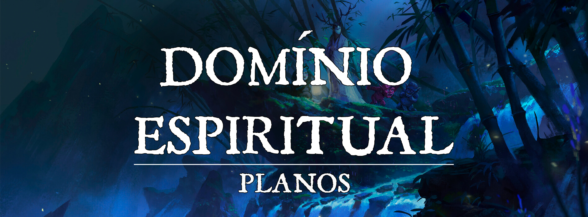

Domínio Espiritual de Turgon
Índice
[articletoc]| Índice
Descrição
Estabelecido no Plano Etéreo, o chamado Domínio Espiritual é uma vasta área que cobre todo o perímetro do Império das Nuvens. Criado pelos Quatro Lordes para proteger os espíritos da natureza, o domínio é um refúgio onde a essência dos espíritos poderia se estabilizar após o cataclisma mágico. Além disso, é a presença do Domínio Espiritual que permite que outros youkais se manifestem ainda hoje, através dos ecos que a própria natureza sussurra.
Dentro dessa grande área existem centenas de outros domínios menores interconectados, na maioria das vezes sob o controle de algum youkai poderoso. Cada um desses pequenos domínios é diferente do outro, e são neles que os youkais gostam de fazer suas moradas, longe da civilização do plano material. No entanto, nem todos os domínios estão diretamente conectados, e muitas vezes para viajar de um para outro, é necessário fazer a travessia pelo próprio plano material. Por isso os dois lados acabam se encontrando com bastante frequência, e isso eventualmente acaba se tornando um perigo tanto para os youkais, quanto para os nativos do plano material. É possível acabar no Domínio Espiritual sem querer, e vice-versa.
Os youkais possuem uma facilidade muito maior para viajar entre esses domínios, enquanto os não-nativos dos domínios normalmente precisam do apoio de magias poderosas ou de portais naturais evidentes para entrar e sair dos domínios de forma intencional. Um dos tipos de portais mais evidentes é a Travessia de Toriis, uma sequência de dezenas de portões torii que formam um corredor, geralmente são encontrados deslocados dentro de florestas ou montanhas. No entanto, nem sempre a travessia funciona. Alguns domínios específicos precisam do consentimento do dono do domínio para que ele seja acessado, enquanto outros possuem propriedades misteriosas, e só podem ser acessados caso certos requisitos sejam atendidos. Como por exemplo, entrar à meia-noite, portar algum item específico, ou apenas citar uma senha pré-determinada antes de tentar atravessar.
O Domínio Espiritual afeta bastante o próprio plano material, permeando-o com sua magia inerente, e é muito difícil evitar eventuais contatos com os youkais. Geralmente esses contatos não são problema, desde que nenhum dos lados sejam youkais malignos, ou caçadores de youkais. Já que cada domínio é moldado pelos youkais que nele residem, principalmente caso exista um mais poderoso sob controle, é bem comum que essas regiões sejam mais problemáticas e reconhecidas no plano material. E o contrário também é possível, a situação do plano material também pode acabar afetando um domínio, ou até mesmo criando um novo. Uma floresta extremamente densa e viva pode manifestar um domínio espiritual sem dono, assim como um cemitério onde a natureza já sentiu muito do sofrimento humano. Não existe uma regra muito específica para o surgimento de um domínio, mas geralmente requer uma espécie de gatilho à altura.
Descrição Visual
Domínio Espiritual |Domínio Espiritual
{kind=link}
Geralmente cada um dos domínios são muito semelhantes a reflexos do mesmo lugar no plano material, mas suas características são mais vívidas e exageradas. Uma floresta pode ser muito mais densa com as árvores mais altas, um cemitério pode ser muito mais sombrio e enevoado, e um campo de flores pode se estender até o horizonte com suas cores vibrantes. No entanto, os domínios não se limitam a ser reflexos, em casos raros existem domínios que são completamente diferentes do Plano Material.
Geralmente essas reflexões são em sua maior parte completamente naturais, mas também é possível encontrar construções, principalmente pequenos templos e santuários nos quais os Kami recebem suas oferendas do plano material e fazem suas moradas. O espreitar inofensivo dos espíritos da natureza pode ser percebido pelos olhos mais atentos, assim como a sensação tranquila, ou ameaçadora do lugar, que costuma ser bem expressiva dependendo do domínio.
Alguns domínios são conectados diretamente entre si, você pode sair de uma floresta de um domínio e passar para um lago de outro, mas uma boa parte deles não possuem muitas conexões, e por isso não é possível atravessar todos os domínios de um lado a outro. Alguns inclusive não estão conectados com nenhum outro domínio. Geralmente podem acontecer duas coisas quando uma criatura começa a sair da região de um domínio e não há outro conectado diretamente: A criatura de fato consegue sair do domínio, e aparece no lugar equivalente do plano material, ou a criatura se perde magicamente, e acaba voltando para o mesmo domínio, ou outro adjacente, dependendo da natureza do domínio. Existem domínios muito traiçoeiros, assim como outros repletos de paz.
Efeitos Planares
Efeitos Planares: Existem alguns efeitos que perduram em todos os domínios menores do Domínio Espiritual, e a maioria deles está ligado com os próprios youkais:
-
Caso um youkai esteja em qualquer domínio, magias de adivinhação conjuradas para adquirir informação sobre ele não dão informações diretas e claras, e geralmente vêm de forma mais misteriosa e incerta. ( Por exemplo, um Legend Lore será ainda mais ambíguo, Scrying, Clairvoyance, e semelhantes mostrarão imagens mais distorcidas, de forma que dificulta a compreensão do que se vê e ouve, ou podem mostrar o alvo apenas como um borrão, ao invés de uma criatura visível. Locate Creature pode dizer que o alvo está dentro do alcance, mas não mostra sua direção exata) Caso o conjurador saiba o nome verdadeiro do youkai alvo, ele pode passar por cima dessa condição.
-
Um youkai que seja dono de um domínio sabe quando uma criatura conjura uma magia de adivinhação em seu domínio, e também sabe a direção geral de onde foi conjurada.
Alinhamento
A maioria dos domínios geralmente é mais alinhada em direção ao Neutro, mas cada domínio possui seu próprio alinhamento.
Habitantes
O Domínio Espiritual é a morada e porto-seguro para os espíritos da natureza, mais tarde sendo chamados de “youkai” pelo povo de Turgon. Quase todos os que habitam nestes domínios são youkais, ou criaturas que descendem deles, salvo raríssimas exceções de criaturas que decidiram ir morar lá, como humanos fascinados por sua realidade, ou outros animais que se perderam.
Seres Naturais
Os youkais são os seres naturais do Domínio Espiritual, e a razão pela qual o domínio existe hoje em dia. Muito é debatido sobre sua origem misteriosa, mas as histórias contam que Inari percebia a presença de seres que não podia ver, quase como se fossem fracas manifestações da natureza ao seu redor. Inari foi aquela que deu a capacidade para que esses seres se manifestassem em forma de criaturas, e compartilhou com alguns de seus primeiros seguidores o conhecimento de como manifestá-los. Atualmente não se sabe quem possui esse conhecimento, mas provavelmente os Quatro Lordes o possuem.
Houve uma época onde a existência desses seres foi ameaçada, quando Draíocht foi forçado a descer para a terra, e reescrever as leis da magia devido a um caos monumental. E foi nessa mesma época que Inari enviou os Quatro Lordes para o Plano Material, onde puderam estabelecer o Domínio Espiritual para proteger a integridade dos Espíritos da Natureza, que eram altamente dependentes da magia.
A partir desse ponto, os espíritos da natureza passaram a conseguir se manifestar sozinhos na maioria das vezes, e foram nomeados como “Youkai” pelo povo que vivia nas terras que mais tarde iriam se tornar o Império das Nuvens. Um termo que abrange uma vasta gama de criaturas, os youkais são muito diferentes entre si. Entre eles existem principalmente feys, corruptores, celestiais e dragões. Por isso youkais são considerados como um subtipo vasto, e mesmo que sejam muito diferentes entre si, compartilham das mesmas raízes: são ecos da própria natureza e da vida que tomaram forma. No entanto, a maioria dos youkais são considerados fey ou corruptores, enquanto celestiais e dragões são mais raros. Uma boa parte dos youkais consegue falar comum fluentemente, mas eles também possuem seu próprio dialeto, Seishin, baseado em Sylvan.
Exemplos populares de youkais são Kitsunes (fey), Kappas (fey), Onis (corruptor), Mizuchis (dragão), Tanukis (fey), Tengus (fey), e por aí vai. No entanto, existem incontáveis tipos de youkais diferentes, muitos deles são catalogados, enquanto outros nunca foram vistos antes.
Suplicantes
Os suplicantes do domínio espiritual recebem o nome de Shinshi, ou Kami no Tsukai, quase sempre são youkais, ou pessoas que tinham uma enorme devoção a Inari ou a algum Kami. Após terem suas almas julgadas e suas memórias expurgadas, esses surgem no domínio específico de algum Kami e se tornam serviçais devotos, se vinculando ao lugar.
Caso os Shinshi saiam do domínio onde estão vinculados, eles lentamente começam a perder sua essência e morrer, e é um trabalho vital para o Kami dono do domínio protegê-los. Por isso eles são designados para trabalhos mais simples, em lugares protegidos. Geralmente cuidam de templos e santuários, ou servem como mensageiros internos de um domínio.
No entanto, os Shinshi também correm riscos. Os youkais malignos gostam de devorá-los para se tornarem mais fortes, o que é visto como uma prática extremamente vil entre os youkais. E por isso os Shinshi geralmente são mantidos dentro do campo de visão dos Kami
Divindades
Inari possui seu próprio domínio no topo do monte Turgon, o “Pico das Cerejeiras”, mas só aparece lá periodicamente. Mesmo assim, ainda é incerto se ela de fato aparece em pessoa, ou se é apenas uma manifestação para entrar em contato com os visitantes do templo, visto que ela nunca para de viajar.
Entidades
Existem diversas entidades no Domínio Espiritual, a maioria delas são chamados de Kami. Todo Kami é dono de um domínio, mas nem todo dono de domínio é necessariamente um Kami. Em sua maioria, os Kami são benignos, entidades que geralmente são adoradas pelos homens no plano material. Além deles, existem outras entidades poderosas que não são consideradas Kamis, esses são youkais que conseguiram alcançar níveis de poder altíssimos, e que geralmente também são donos de domínios. Esses não necessariamente são malignos, mas muitos são.
Uma lista de entidades populares são: • Os Quatro Lordes: Genbu, Seiryuu, Suzaku e Byakko.
• Yamata-no-Orochi
• Sun Wukong
Domínios Espirituais
Pico das Cerejeiras:
unknown - 2023-01-21T160404.980.png |Pico das Cerejeiras
{kind=link}
Domínio de Inari, sua entrada fica no topo do Monte Turgon, um único grande portão Torii é a passagem para entrar, basta apenas o forte desejo de entrar em seus domínios. Uma bela paisagem, repleta de cerejeiras que bloqueiam a vista dos arredores. Suas pétalas parecem nunca parar de cair, mas, mesmo assim, o solo não fica repleto delas. Apesar de sua dona quase nunca estar presente, nenhum outro youkai ou kami pode reivindicar o domínio para si. Além disso, na presença de Inari ou de um dos Shinshis que habitam o domínio, todos youkais são compelidos a serem pacíficos. No topo do monte, sob as cerejeiras, se ergue um enorme templo, de tamanho suficiente para acomodar diversos convidados.
Vale das Brumas:
ramiz-ng02-morina-autumn-is-comming-06-4k-2-lrm-3k.png |Vale das Brumas
{kind=link}
Domínio de Seiryuu, um domínio habitado por diversos youkais dracônicos, os diversos rios que cruzam o vale emanam brumas constantemente, criando um ambiente enevoado por todo o vale. O domínio se estende por milhas, e é sempre visível a sombra serpenteante dos dragões sobrevoando a região. Na montanha mais alta é encontrado o palácio de Seiryuu, nele, figuras humanoides com algumas características dracônicas cuidam do lugar, esses são seus Shinshis, que podem se tornar em pequenos dragões para voar de um lado a outro. No resto do vale, diversas pequenas sociedades e vilas youkai se formam.
Palácio Incandescente:
pei-gong-00009-1.jpg |Palácio Incandescente
{kind=link}
Domínio de Suzaku, um palácio no topo de uma montanha rodeada por nuvens, acessado através do Templo de Suzaku em Kaen, mas apenas pode-se entrar com a permissão de Suzaku. O palácio é repleto de diversas câmaras, onde seus Shinshis vivem o dia-a-dia, cuidando do palácio e o decorando cada vez mais. Os Shinshis tomam a forma de humanóides luminosos que parecem chamas, mas não queimam.
Castelo do Trovão:
6125826-luminos-mh-c-luna-moonlight-blue-world-mountain-fantasy-moon-tree-green.jpg |Castelo do Trovão
{kind=link}
Domínio de Byakko, sua entrada fica a oeste de Inazuma, o Torii do Tigre é sua porta de entrada. Ao passar pelo Torii, o castelo construído em cima das nuvens é a primeira paisagem a ser vista. Ao redor do castelo é possível encontrar diversos Shinshis de aparência semelhante a de felinos que parecem voar por entre as nuvens tecendo raios e trovões como se tecessem toalhas e cachecóis. Passando pelos portões do castelo já é possível sentir a presença intimidadora do Kami, que sempre solta um alto rugido para recepcionar seus convidados.
O Castelo do Trovão em sí é uma grande estrutura de pedra escura, com torres altas e pontiagudas que se erguem no céu. O exterior do castelo é adornado com símbolos de raios e trovões, como relâmpagos entalhados em pedra e runas místicas brilhantes. O interior do castelo é iluminado por tochas acesas e velas brilhantes, que lançam sombras douradas nas paredes de pedra. As salas do castelo são espaçosas e elegantes, com tapetes luxuosos, móveis ornados e janelas altas que deixam entrar a luz do sol. Em um dos aposentos mais luxuosos do castelo, Byakko, o Kami youkai, repousa em um trono de pedra, observando seu domínio através de janelas com vista para o céu tempestuoso.
Mansão do Outeiro:
26f9d9fba5dda48d0228bf24cbb26da8.png |Mansão do Outeiro
{kind=link}
Domínio de Genbu, sua entrada fica a norte de Tamamizu, o Torii da Tartaruga é sua porta de entrada. Passando pelo Torii, uma brisa leve recepciona os visitantes do domínio da Tartaruga. A mansão de fato é uma construção que fica entre as colinas verdejantes do domínio, comparada à magnanimidade dos domínios dos outros Lordes, a mansão de Genbu é bem mais “humilde”, sendo bem menor em tamanho e em ostentação. Os Shinshis do domínio normalmente possuem a forma de pequenas tartarugas que repousam pacificamente nas colinas e nos lagos do domínio.
A Mansão do Outeiro é um lugar sagrado e místico, localizado nas montanhas geladas do norte. É protegida pelo Kami youkai Genbu e pode ser acessada através do Templo do Inverno, em Tamamizu. A mansão é construída sobre o casco de Genbu, que se mantém praticamente imóvel no salão principal da mansão, como uma verdadeira montanha. O interior da mansão é luxuoso e confortável, com salões de recepção, quartos e jardins internos. Há também áreas de meditação e treinamento para aqueles que desejam se aprofundar em sua espiritualidade e cultivar suas habilidades. A mansão é um lugar de paz e harmonia, onde os visitantes podem encontrar tranquilidade e reflexão. Genbu é um anfitrião gracioso e acolhedor, sempre disposto a ouvir e ajudar aqueles que procuram por sua sabedoria e orientação. Ele é um guardião justo e amoroso da mansão e de todos os que a habitam, sempre procurando manter a paz e a harmonia em seu domínio.
Shoji no Machi:
a-room-with-a-traditional-japanese-sliding-door-cartoon-style-vector.jpg |Shoji no Machi
{kind=link}
É um Domínio Neutro onde existem diversas passagens entre os domínios, onde pode-se ir para muitos lugares, mas geralmente sem um caminho de volta garantido. Kitsunes podem ir e vir por todas as passagens. Existem inúmeras entradas dentro de domínios espirituais, mas a única conhecida no plano material fica na Vila Kamuy.
O ambiente compele quem estiver no domínio à não-agressão, é repleto de milhares de portas de correr com pinturas tradicionais em todo canto. Um lugar fácil de se perder, mas pode-se achar seu caminho de volta através das pinturas com um pouco de esforço.
Os caminhos convergem numa bela cidade, composta por essas mesmas portas, onde diversos youkais acabam por viver suas vidas. É um lugar onde muitos se encontram.
Existem criaturas nessa cidade conhecidos como "Exiladores das Portas". São seres misteriosos, que normalmente não se comunicam, nem demonstram muitas emoções. São acionados quando alguém, seja youkai ou mortal, interrompe a ordem e começa a causar o caos dentro da cidade. Esses guardas evitam de usar agressão, e normalmente usam selos de papel que causam a expulsão de seu alvo, temporariamente ou permanentemente, porém possuem uma boa habilidade de defesa e ataque baseados em artes marciais orientais e ki, e se defenderam caso sejam atacados.
Quase sempre são vistos quando estão indo atras de alguém para realizar a ação de exilio, e só respondem ao ser de maior hierarquia dentro de Shoji no Machi. Quando alguém tenta interagir com eles, normalmente respondem da maneira mais simples e curta possível, para então voltar ao seus deveres.
Floresta dos Gigantes:
tenca-bigtreesb.png |Floresta dos Gigantes
{kind=link}
É um dos maiores e mais antigos domínios de toda Turgon, um domínio neutro. Recebeu esse nome por conta de suas árvores colossais que parecem alcançar os céus enevoados de toda a região. No entanto, essa natureza é quase sempre acompanhada por diversos selos de proteção e pequenos santuários e templos abandonados, onde youkais acabam habitando de tempos em tempos. Muitos youkais vivem nesse domínio, tanto puros quanto corrompidos.
É dito que esse domínio existe até mesmo antes dos domínios dos Quatro Lordes, sendo o primeiro lugar que se manifestou com a presença do Domínio Espiritual. Sua grande extensão permite uma enorme diversidade dentro do domínio, e é um dos lugares mais conhecidos dentre os domínios. Para entrar no domínio, você deve passar por um portão torii de algum templo abandonado da região com a intenção de entrar no domínio.
Pântano das Serpentes:
unknown - 2023-01-21T161934.453.png |Pântano das Serpentes
{kind=link}
Domínio de Yamata-no-Orochi, a Serpente de Oito Cabeças. É um pântano enevoado e misterioso, com diversas serpentes que lentamente rastejam pelas águas, algumas pequenas, outras colossais. No entanto,o perigo desse domínio não está nas cobras, mas sim nos youkais malignos que o habitam. Para entrar no domínio você precisa encontrar uma única cobra branca no meio de todo o pântano, a menos que você já tenha permissão de Yamata-no-Orochi para entrar. Com permissão, é só desejar entrar no domínio ao passar por um dos toriis velhos da região.
Criaturas perigosas se escondem no pântano, nas regiões secas e úmidas. Muitas delas fizeram contratos com Yamata-no-Orochi, a serpente maligna e ambiciosa que busca tirar tudo que pode tanto dos youkais, quanto dos humanos. E esses usam o domínio para se refugiarem enquanto trabalham no que querem, com permissão de Orochi em troca de sacrifícios.
As lendas dizem que uma vez por mês, Orochi pede aos residentes do domínio 8 sacrifícios, um para cada cabeça. Caso o sacrifício não seja de seu agrado, Orochi toma algo à força de quem o fez. Caso não haja sacrifícios o bastante, ela garante que sua fúria transborde até mesmo para além do domínio. É muito temida até mesmo entre os mortais, dizem que os exorcistas já tentaram lidar com sua opressão muitas vezes, mas não tiveram sucesso. Acreditam que Yamata-no-Orochi se esconde nas profundezas do pântano, e só emerge para exigir seus sacrifícios.
Na região surgem Shinshis, geralmente criaturas que morreram e ainda tinham um pacto pendente com Orochi, ou outras criaturas maléficas que morrem em Turgon podem surgir lá. Os Shinshis possuem o formato de pequenas chamas que vagam pelo pântano, e podem tomar uma forma diferente dependendo da vontade de Orochi. Algumas vezes são usados como moedas de troca.
Existe um item chamado de Chave das Serpes, que é um artefato que serve unicamente para possibilitar a passagem de Shoji no Machi para o Pântano das Serpentes. Não é comum se encontrar um item desses, sendo mais plausível de se achar nos próprios domínios citados.
Para se criar uma chave é necessário aprisionar um Youkai com a permissão de entrada no Pântano dentro de um globo de cristal no valor de pelo menos mil peças de ouro. Uma cobra aparece dentro do globo a medida que o Youkai é aprisionado no cristal. A aparência da cobra é definida pelas características do Youkai aprisionado.
Mercado de Hanza:
unknown - 2023-01-21T162047.456.png |Mercado de Hanza
{kind=link}
Domínio civilizado com um grande mercado, ponto “neutro” para os youkais. Sua entrada fica ao leste de Shuran, numa trilha entre montanhas. Para entrar no domínio existem alguns pre-requisitos: você precisa estar vestindo uma máscara de noite, e também precisa desejar entrar no domínio. Nesse grande mercado são trocadas diversas mercadorias fora do comum. Em grande parte das vezes não se usam moedas, ao invés disso são feitas trocas. Às vezes trocando coisas mais palpáveis, como objetos de valor, jóias, artefatos, e coisas do gênero, mas algumas trocas pedem por coisas muito mais etéreas e subjetivas, tais como tempo de vida, ou até mesmo um pedaço da própria essência vital do negociante.
Seus conteúdos são raros, e suas regras estritas. E mesmo que seja um ponto neutro para os Youkais, o lugar não é um dos mais receptivos, principalmente para humanos, que não tem sua segurança totalmente garantida.
Floresta Sekaiju:
unknown - 2023-01-21T162233.298.png |Floresta Sekaiju
{kind=link}
Um domínio repleto de natureza abundante e mística, em sua grande maioria é habitado por youkais ferais, muito semelhantes a animais e plantas. A colossal árvore no centro da floresta também é o kami Sekaiju Sekenki, que protege essas terras imaculadas, representando o próprio coração do lugar. Alguns dos youkais são dotados de inteligência, mas outros são apenas feras. A força da natureza impede que sejam criadas estruturas na região, mantendo o avanço da civilização longe.
É um lugar de interesse para youkais malignos, muitos buscam caçar os Shinshis do lugar, que geralmente tomam a forma de animais ou de pequenas chamas inofensivas. Geralmente eles não ficam longe da colossal árvore, mas alguns acabam se perdendo. Não é muito incomum que os guardiões da floresta entrem em conflito com invasores, sejam bandidos ou youkais malignos.
I'Cath, o Domínio preso no Sonho:
eaad4c40619597.57864c7ad572b.jpg |I'Cath dos Sonhos
{kind=link}
Quando os habitantes de I'Cath adormecem, eles entram em uma versão alternativa da cidade que chamam de lar - uma cidade sonhada pela Youkai senhora do domínio. Com o tempo, essas pobres almas não conseguem lembrar qual versão é a verdadeiro I'Cath e qual é o sonho.
No mundo físico, as ruas surreais e cheias de nós de I'Cath ecoam com seu vazio. Dentro de casas geminadas e sinuosas, a maioria da população fica jogada contra as paredes ou deitadas uma sobre as outras. Essas pessoas estão presas em um mundo de sonho coletivo criado pela Yokai governante da cidade, Tsien Chiang. Dentro desse sonho compartilhado, eles trabalham incessantemente, sempre se esforçando para criar a cidade impossível e perfeita de uma mente perfeccionista.
Dentro do domínio dos sonhos de I'Cath, Tsien Chiang governa uma visão dourada da cidade - um lugar de extrema beleza e eficiência onde todas as coisas se movem de acordo com seu desígnio. Para ela, é quase perfeição. Para seu povo, é um pesadelo de labuta inescapável da qual a morte é a única saída. As ruas idênticas e uniformes da cidade dos sonhos se espalham por uma colina larga, no topo da qual se ergue um glorioso palácio que Tsien Chiang compartilha com suas quatro filhas perfeitas. Dia ou noite, as ruas enchem-se de gente sempre a trabalhar para aperfeiçoar os edifícios, remodelar os jardins e desfazer o trabalho dos dias e semanas anteriores em favor de novos designs. Dentro do sonho, as pessoas não dormem, não comem, nem precisam atender a quaisquer outras preocupações. Eles conhecem apenas seu trabalho e a glória de Tsien Chiang.
No mundo desperto, a verdade de I'Cath é totalmente aparente. Filas de casas decrépitas e mofadas se fundem em avenidas intermináveis e sinuosas. As ruas serpenteiam e dobram para trás, mas eventualmente sobem a elevação no centro da cidade, onde o infame Palácio dos Ossos e a Torre Ping'On se erguem. Durante o dia, as ruas estão praticamente vazias, exceto pelos poucos residentes desesperados de I'Cath que ainda não sucumbiram ao sonho do domínio. Eles correm por suas vidas, vasculhando o que podem na esperança de suportar a noite que se aproxima.
A cada crepúsculo, Tsien Chiang escala a Torre Ping'On infestada de espíritos e toca o Sino do Rouxinol. Isso renova a magia de seu mundo dos sonhos e mantém seus cidadãos adormecidos, mas também evoca a legião dos ancestrais mortos-vivos de I'Cath, que ela submeteu à sua vontade. Todas as noites, os jiangshi emergem de seus túmulos e remodelam as ruas labirínticas da cidade, esforçando-se para corresponder à visão de Tsien Chiang com perfeição impiedosa. Os servos da Yokai movem cuidadosamente quaisquer adormecidos que encontram para fora do caminho de seu trabalho, mas atacam qualquer alma acordada que cruza seus caminhos.
Qualquer um que chegue a I'Cath ou que acordem do sonho de Tsien Chiang se encontram em uma cidade cinzenta, assombrada e em constante mudança, onde a comida é escassa e os jiangshi caçam os vivos. Com o crepúsculo vem uma escolha terrível: suportar os terrores incertos do mundo desperto ou sucumbir à servidão sem fim durante o sono.
1b77f06b9bcbe7ad83eeaa33daf33956.jpg |I'Cath Desperta
{kind=link}
Monastério Bastão do Macaco:
Monastério Bastão do Macaco |Monastério Bastão do Macaco
{kind=link}
Domínio de Sun Wukong, o Rei Macaco. Construído com o intuito de proteger e treinar youkais mais fracos, o Monastério Bastão do Macaco é regido por Sun Wukong, um youkai que toma a forma de um macaco e é reconhecido por sua arte marcial única.
Para acessar o monastério, é necessário passar pelo torii do macaco que se encontra numa das montanhas ao norte do Monte Turgon, guardado por Wukong, um famoso Youkai que toma a forma de um macaco e usa movimentos ágeis e seu bastão mágico para lutar.
Uma vez dentro do monastério, os visitantes são recebidos por uma paisagem deslumbrante, com cachoeiras, rios cristalinos e florestas densas. O monastério é construído com pedras antigas e madeira rústica, e é cercado por jardins zen, estátuas do Rei Macaco e de Inari.
Os monges que vivem no monastério são especialistas em artes marciais e meditação, e passam anos treinando para alcançar o aperfeiçoamento espiritual e físico, focando fortemente na arte do bastão e da agilidade. Eles são liderados por Wukong, que também auxilia nos treinamentos, ensinando um pouco de suas técnicas únicas e mágicas.
Existem diversas raças diferentes de youkais que habitam no monastério, e até mesmo é possível encontrar diversos seres humanoides treinando por lá, cada um com suas próprias habilidades e conhecimentos. Eles vivem em harmonia, respeitando as diferenças uns dos outros e trabalhando juntos para alcançar a iluminação de Inari e o aperfeiçoamento de suas técnicas.
Wukong |Sun Wukong
{kind=link}